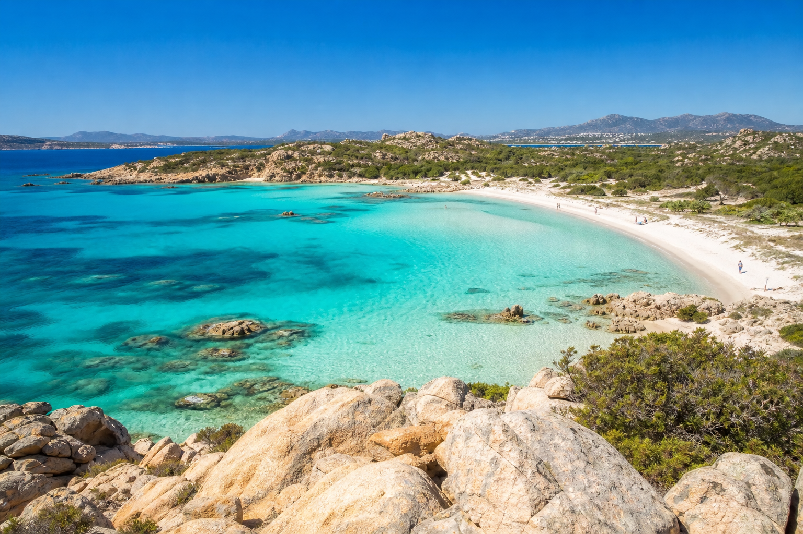
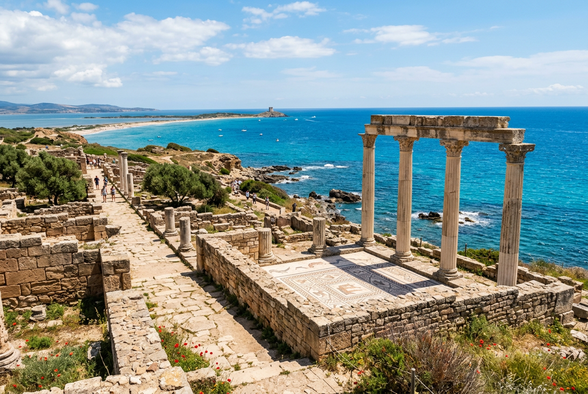
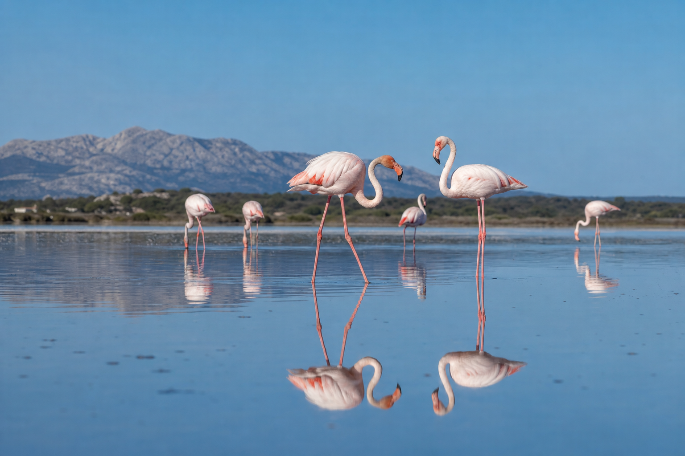
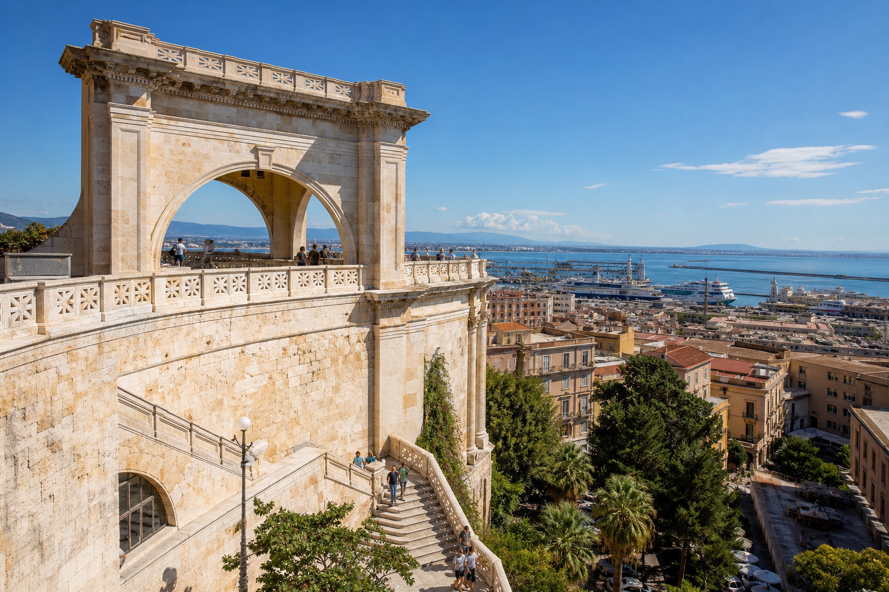
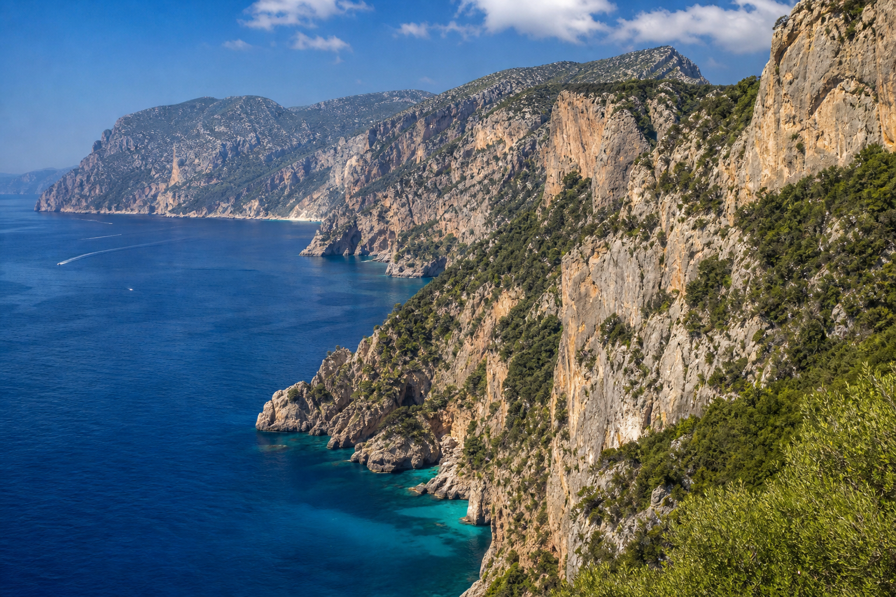
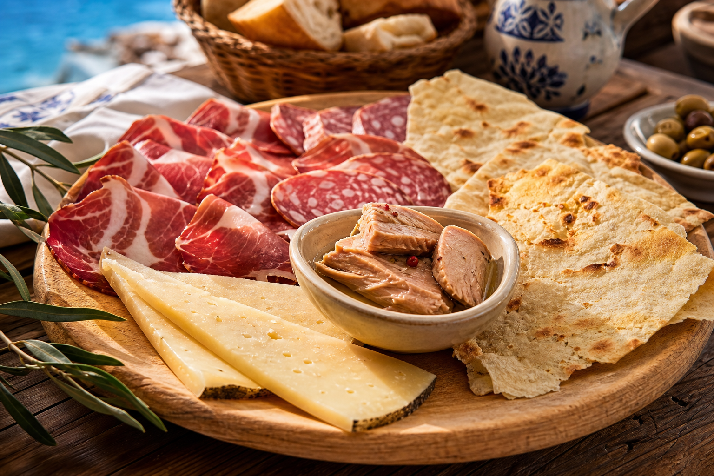

Reiseverlauf: Sardinien Juni 2026
Anreise und Transit
12. Juni 2026
- Gropello Cairoli: Aufenthalt in einem B&B. Merkmale: freundlicher Empfang, saubere Zimmer.
- Gastronomie: Besuch des Ristorante Capriciosa; Spezialität: Pizza.
13. Juni 2026
- Genua: Anfahrt zum Fährenhafen, Einchecken des Fahrzeugs.
- Fährüberfahrt:
- Unterkunft in Kabinen auf Deck 5 (Ausstattung: ausklappbare Betten, Hochbetten).
- Einrichtungen: Rezeption auf Deck 6, Sonnendeck auf Deck 11, Hubschrauberlandeplatz und Bug-Aussicht auf Deck 12.
Nord-Sardinien und La Maddalena
14. Juni 2026
- Olbia & Costa Smeralda: Ankunft und Fahrt entlang der Küste.
- Porto Cervo: Besichtigung der örtlichen Kirche und des Zentrums.
- Palau & La Maddalena: Überfahrt mit der Fähre zur Insel La Maddalena.
- Unterkunft: Hotel Excelsior; Zimmerausstattung: hochwertig, Zimmer 208.
- Gastronomie: Taverna Baro; Angebot: Käse- und Schinkenplatten aus lokaler Erzeugung.

Blick auf die Costa Smeralda, Nord-Sardinien
15. Juni 2026
- Insel La Maddalena:
- Spiaggia di Punta Tegge: Zugang zur Scogliera di Tegge zu Fuß.
- Bassa Trinita: Strandabschnitt zur Erholung.
- Guardia Vecchia: Erkundung unbefestigter Wege und Aussichtspunkte.
- Gastronomie:
- The Bistrot: Spezialität "Fisch des Tages mit Maccarone" (typisch sardisch).
- Lokale Gelateria in unmittelbarer Nähe zum Hotel.
16. Juni 2026
- Insel Cabrera:
- Kultur: Besichtigung des Exilhauses von Giuseppe Garibaldi.
- Natur: Wanderung (ca. 1,5 km) über felsiges Terrain zum Strand Cala Serena; Merkmale: glasklares Wasser, diverse Fischarten.
- Gastronomie: Osteria Chez Coco; preiswertes, lokales Angebot.
Nord-West und Zentralsardinien
17. Juni 2026
- Palau & Umgebung:
- Capo d'Orso: Besichtigung des Bärenfelsens, Rundumblick von der Anhöhe.
- Capo Testa: Besuch des Leuchtturms.
- Alghero: Ankunft in der Stadt.
- Unterkunft: Effe 53 Kevins Charming Houses; Zimmer 53 im 1. Stock.
18. Juni 2026
- Alghero Stadtrundgang:
- Ehemaliges Kloster Francesco mit angeschlossener Kirche.
- Glockenturm des Klosters: Zugang ermöglichten weitreichenden Rundumblick über die Stadt.
- Besuch weiterer örtlicher Kirchen.
19. Juni 2026
- Bosa: Mittelalterliche Stadt am Fluss Temo.
- Sehenswürdigkeiten: Aufstieg über 206 Stufen zum Castello, Besichtigung der Stadtmauer und der Türme.
- Cabrás: Unterkunft mit Poolanlage.
- Kulinarik: Verzehr von Caracau-Brot, lokalen Käsesorten und Wurstwaren.

Archäologische Stätten in Sardinien
20. Juni 2026
- Tharros: Archäologische Ausgrabungsstätte.
- Highlights: Torre, antike Nekropole, Leuchtturm am Cabo.
- Stadtstruktur: Überreste der punischen und römischen Stadt.
- Strand Is Arutas: Bekannter Sandstrand zur Erholung.
- Natur: Besichtigung lokaler Lagunen.
21. Juni 2026
- Oristano:
- Stadtmauer: Aufstieg auf einen alten Turm mit Panoramablick.
- Kathedrale: Größte Kathedrale Sardiniens.
- Portovesme: Ankunft via Fähre.
- Gastronomie: Pomata Bistrot; Angebot: Gourmet-Pizza mit Oliven und rotem Thunfisch, Linguine.
Süd-West und Cagliari
22. Juni 2026
- Südwestküste:
- Capo Sandalo: Standort des westlichsten Leuchtturms Italiens.
- Cala Fico: Felsiger Strandabschnitt.
- La Bobba: Sandstrand mit Wassertemperatur von ca. 26 Grad.
23. Juni 2026
- Carloforte:
- Industrie: Thunfisch-Fabrik (Produktionsstätte).
- Stadtzentrum: Besichtigung lokaler Kirchen und Fachgeschäfte.
- Natur: Lagune mit Vorkommen von Flamingos.
- Gastronomie: Pescheria Sandolo; Fokus auf Thunfischgerichten (Tartar, Filet, Ventresca).

Flamingos in einer sardischen Lagune
24. Juni 2026
- Pula: Ausgrabungsstätte Nora.
- Historie: Nutzung durch Phönizier, Punier und Römer (1000 v. Chr. bis 500 n. Chr.).
- Sehenswürdigkeiten: Umfangreiches Areal, antike Mosaike, spanischer Torre.
- Cagliari: Ankunft in der Hauptstadt.
- Unterkunft: Hotel Aristeo; Zimmer 614 im 6. Stock (Großzügiges 3-Bett-Zimmer).
- Gastronomie: Ristorante Impasto; Gerichte: Vitello Tonnato, Tortellini alla Panna, Spaghetti Carbonara.
25. Juni 2026
- Cagliari Stadtzentrum:
- Stadtteil Castello: Historisches Zentrum auf einem Hügel.
- Museo Archeologico: Archäologisches Museum.
- Sehenswürdigkeiten: Kathedrale, Elefantenturm.
- Gastronomie: Bistrot Antica Cagliari.

Bastione di Saint Remy in Cagliari
26. Juni 2026
- Cagliari - Kultur & Geschichte:
- Bastione di Saint Remy: Panorama-Aussichtspunkt über die Stadt und den Hafen.
- Underground Tour: Besuch von Schutzräumen aus dem Zweiten Weltkrieg in den Felsen.
- Sakralbauten: Cripta San Restituta, Kirche Santa Eulalia (römische Ruinen und antike Straße im Untergrund), Santo Sepolcro Kirche mit Krypta (Holzkreuze und Gebeine).
Süd-Ost und Rückreise
27. Juni 2026
- Burcei: Besuch des Agriturismo "Sa Dom e Malloru"; Spezialität: Spanferkel.
- Tortoli: Zwischenstopp für Versorgung.
- Baunei: Unterkunft mit weitreichendem Ausblick.
28. Juni 2026
- Baunei Umgebung:
- Viewpoint Baunei: Aussichtspunkt über die Region.
- Paragliding Startplatz: Hochgelegener Punkt mit Panoramablick.
- Ortskern: Besichtigung der örtlichen Kirche.
- Gastronomie:
- Dispensa 125: Mixed Bruschette (Zwiebeln, Honig).
- Takeaway Murme: Spezialität Culurgiones.

Die zerklüftete Küste bei Baunei
29. Juni 2026
- Santa Maria di Navarrese: Bootsausflug entlang der Küste.
- Spiaggia di Bilariccolo: Ankerplatz für Schwimmen und Schnorcheln.

Typische sardische kulinarische Spezialitäten
30. Juni 2026
- Rückreise: Fahrt über die SS125 nach Olbia.
- Fährüberfahrt: Rückreise von Olbia nach Genua.
- Fähren-Details: Unterkunft in Kabine 5302, Nutzung der Innenpiazza.
1. Juli 2026
- Transit: Ankunft in Genua, Weiterfahrt über Mailand nach Como.
- Como: Besuch des Stadtzentrums, der Kathedrale und des Comer Sees.
- Graubünden (Schweiz): Fahrt über den Maloja-Pass nach Samedan.
2. Juli 2026
- Engadin:
- Muottas Muragl: Aufstieg mit der Standseilbahn auf über 2400 m.
- Pontresina: Stadtbesichtigung und Aufenthalt im Restaurant Hotel Steinbock (Engadiner Speisen).
3. Juli 2026
- St. Moritz: Besichtigung der alten Ortsteile.
- Samedan: Erwerb regionaler Spezialitäten (Engadiner Torte, Nusstorte).